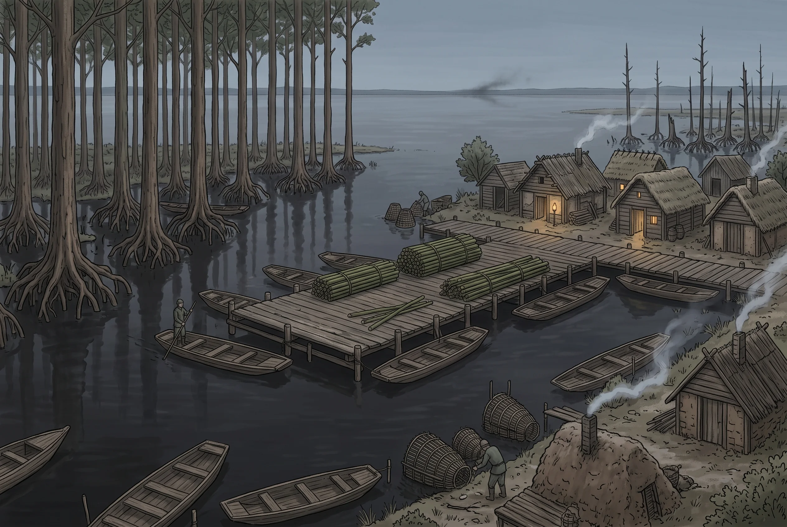

Alneta
Village · Buralia · Boundary · Alder piling, eel, fen goods; the last landing north · pop. ~400
Type: Village · Condition: Modest · Disposition: Wary First look: Built over or beside water · Projects: Trade · Touchstones: Isolationism and privacy Region: Weirden Fen · Location: Fen Location detail: The last landing on the Weirden delta, thirty miles of channel off the head of Falter Sound
Exports: Alder piling above all: green alder, cut long, which does not rot underwater and which Freeport buys by the shipload because Freeport is built on a sinking isthmus and has been driving new piles under itself for two hundred years. Smoked eel by the barrel. Dried fen fruit, fungus in grades, and medicinals for the hospices and for whoever else is buying.
Imports: Grain, salt, iron, cloth, cordage, oil. More of all of it than four hundred people could eat in three lifetimes, and nobody in Alneta has ever been asked to explain that.
Alneta stands on the eastern shore of Falter Sound where a river out of the Buralian interior loses its nerve and spreads: thirty miles of brackish delta, alder carr standing in black water, reed to the horizon, and channels that are not where they were last year. From the western shore on a clear day you can see the smudge of Ravenna across the water, which is close enough that both places pretend the other is somewhere else.
The people here came from the Weirden Fen, four generations back and four hundred miles, and they will still tell you so. Fen-folk know wet ground the way other people know a street, and what they worked out is that the Weirden’s produce was worth three times as much in Freeport as it fetched at Mons, and that the difference was all carriage. So a few families walked east to the nearest marsh with a sea road out of it and started again. They kept the platforms, the dolos, the willow eel-traps, the inherited collecting rounds and the habit of drowning strangers who go where they are told not to go. What they added was a wharf.
Dolos
There is not a wheel in Alneta and there is no reason for one. Thirty miles of delta has no ground worth the word. It has channels, and everything that moves in this place moves on one, in a dolo.
A dolo is long, narrow, flat on the bottom and drawing about a hand’s depth, with a rise at the bow to push reed aside and a flat counter astern to stand on. It is poled, never rowed and never sailed: the channels are too tight for oars and too sheltered for canvas, and in any case a pole does something neither of those can. It tells you where the bottom is. A delta whose channels move every winter cannot be navigated from memory alone, and a dolo man reads the ground continuously through the pole in his hands, in the dark, in fog, while talking about something else.
They are built of alder, which is the whole joke and nobody here thinks it is one: the wood Alneta sells to Freeport because it will not rot underwater is the wood Alneta’s boats are made of. A well-kept dolo outlives the man who commissioned it and is inherited, and the sizes run from a one-person craft a child can handle to the long cargo dolos that work the wharf, poled by two and carrying what a wagon would carry if a wagon could get here.
Everything happens in them. Children are poled to whatever passes for schooling; the dead are poled out; a household’s whole standing is legible in the condition of its boat. The working dolos of the reed families are plain, tarred, and immaculate. The ones belonging to the families who have grown fat on the Spero victualling are carved along the washboards and painted at the bow, which the reed families regard as exactly as vulgar as it sounds and have not said so, because the money is real.
An outsider is spotted the moment he takes a pole, and not because he is clumsy. It is that he watches the water. Nobody who grew up here looks down.
Coasters
Alneta builds two kinds of boat and neither of them goes to sea.
The dolo works the channels. For the Sound there is the coaster: a single-masted shallow-draft hull that draws three or four feet loaded, built in the same yards out of the same alder and oak by men who learned it from their fathers. It carries what a dolo cannot and it carries it well. It is also the largest thing anybody in this delta knows how to make, and it is not a sea boat.
Nobody here has laid a keel deep enough for open water, and the reason is not thrift. Nobody here knows how. A hull that will take the Sea of Bees wants a shape, a scantling and a way of fastening that went with the Unmaking, and there is no yard within two hundred miles of this delta that still has it. Freeport has it, on a quay Alneta men have stood on, and Freeport does not teach it.
So a coaster works the shore and works it in sight of the shore. The Spero run north is a coastal crawl in daylight with the lead going and a bolthole in mind for every hour of it, and it is possible at all because it never once leaves the coast. South is the same trade in the other direction. Everything Alneta sells beyond this Sound goes down to Freeport, is landed there, and is put onto somebody else’s hull.
Which is the fact under the whole of this village. Alneta has a wharf, a bonded store, a cooper, a chandler, two victuallers and a genuine sea trade, and it has never once sent a cargo out of the region under a hull of its own.
That wharf is the whole of Alneta’s importance and the reason a village of four hundred has a chandler, a cooper, two victuallers and a bonded store. It is the last landing on this coast. North of here there is nothing anybody will admit to until the mission wall, and everything that goes up to Spero (every barrel of salt pork, every sack of flour, every yard of canvas and length of chain and cask of lamp oil) is bought, bonded and loaded here, because there is nowhere else to buy it and no road to bring it by.
Alneta has grown comfortable on that and has a constitution about it that no one has ever had to state: the goods go north, the money comes back, and nobody walks up the shore to see who is eating. The Ecclesia’s factor settles his account quarterly, in silver, and is a courteous man. Twice a year one of the coasters comes up from the bay east of Freeport riding low with people on the deck who speak Freeport dockside, and it stops here for water, and it goes on north, and it comes back empty. Nobody in Alneta has ever discussed this in front of the factor.
And this is the thing about the place that matters more than the alder. Nobody outside that wall knows what is inside it, except that a victualler in Alneta has been writing down flour by the hundredweight for twelve years, and flour is people. There is an honest census of Spero in a ledger in a back room in this village, kept by a man who has never once thought of it as a census, and it is the only one that exists.
Features
- Alder carr standing in black water, cut in long green lengths
- A wharf out of all proportion to the village behind it
- Bonded store, cooper, chandler, two victuallers, and no inn worth the name
- Dolos poled down every channel, and not a wheel in the place
- Alder hulls, tarred and plain, or carved and painted if the money is new
- A pole reading the bottom in fog, and nobody looking down
- Willow eel-traps and smoke-houses going all season
- Channels through the delta that moved since the last survey
- Ravenna’s smudge across the water on a clear day
- Freight going north that nobody in the village will eat
- A courteous Ecclesia factor who settles quarterly in silver
- Coasters heavy on the way up the coast and empty coming back
- Single-masted hulls drawing four feet, and the shore never out of sight of them
- The shore road north, and the understanding that one does not walk it
- Twelve years of victualling ledgers in a back room
Quest Starter
Somebody wants to know how many people are at Spero, and there is no way to find out: no road, no informant, no manifest anyone will show you. But everything up there is fed from Alneta, and a village victualler has twelve years of order books, and flour is people. He is not hiding them. He has simply never been asked, and he will want to know why you are asking before he decides whether he has always been an accessory.